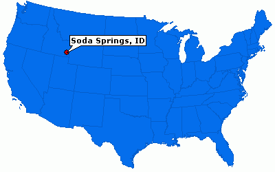

city
Weather Summary
Currently: loading
Temp: °F
WindChill: °F
Humidity: %
Windspeed:5 mph
| Wed | Thurs | Fri | Sat | Sun |
|---|---|---|---|---|
 |
|
|
|
|
| ° F | ° F | ° F | ° F | ° F |
October Fest
Fun, Music, Food, Vendors, Kids Carnival, Duck Race, Raffle, Bingo, Crazy Hamster Race, Punkin’ Chunkin’ and Fire Spinning! Costumed Fun Run (Walk or Bike), 5K or 10K. Oktoberfest Beer Tasting & Kickoff Party is held on Friday night at the Riverside Hot Springs Inn and Portneuf Grille & Lounge.
Oktoberfest, which started in 1810, originally took place in October, but as it grew and was prolonged, it was moved earlier in the season, which allowed for better weather and a more enjoyable time for festival-goers.
Even though most of the current-day festival takes place in September, the last weekend is usually in October, but the name remains the same no matter what month it's in. At its core, Oktoberfest is really about coming together and having a good time.
Map
The ABC forecast
near_me 34 Main Street
Sodasprings, Idaho
local_phone 999-655-4527
email ABC@forecast.news